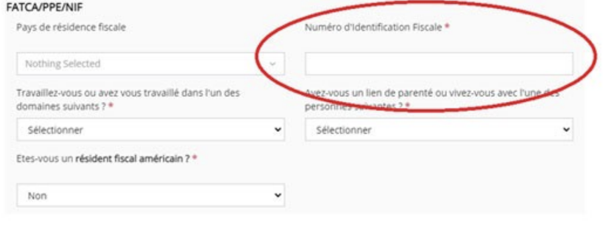
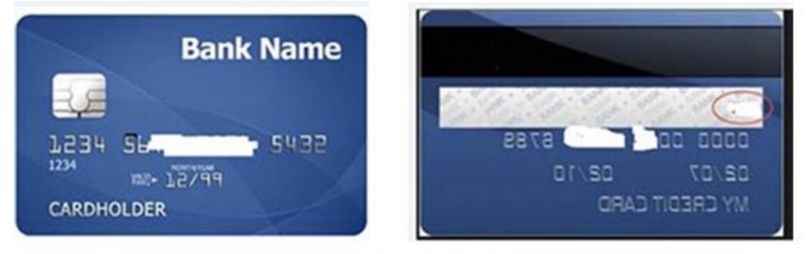
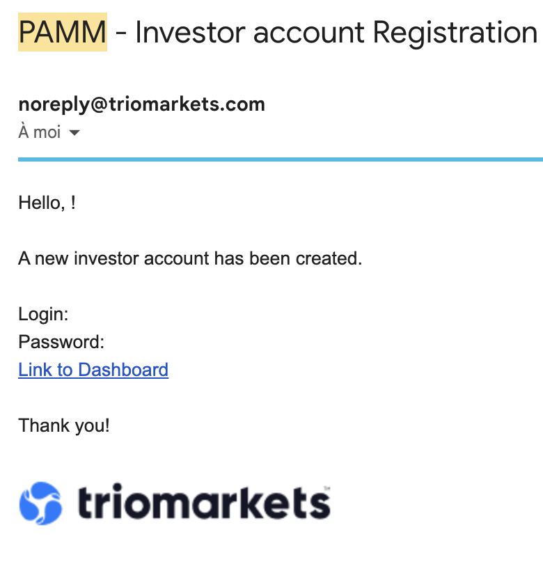

Don Parrinho
Le nouveau service de trading professionnel automatisé en partenariat avec un cabinet de trading
ZEENO est un service de trading professionnel automatisé en partenariat avec un cabinet de trading accessible à tout public majeur ayant ou non des connaissances en trading.
Avec une solide expérience et une stratégie en place depuis plusieurs années qui a fait ses preuves, ce risque peut être fortement maitrisé et réduit à son minimum.
Le service ZEENO Intensity est une version boostée de la version Serenity qui nous permet de viser un objectif de rendement de plus de 15% par mois en intérêts composés avec des sécurités renforcées sur le capital.
Définition d'intérêts composés :
Les intérêts sont calculés sur la base du capital en cours et non sur le capital de départ, c'est à
dire du capital qui comprend les gains précédemment gagnés.
Accès rapide
Cliquez sur une ligne en dessous pour descendre dans la section choisie
AVANTAGES DU SERVICE DON PARRINHO
Disponibilité des fonds
Gérez et contrôlez vos propres fonds sur TrioMarkets en utilisant l’appication MetaTrader 4/ le service PAMM de TrioMarkets. Déposez et retirez à tout moment. Vous seul avez accès à votre placement : Fond initial + gains engendrés + intérêts composés.
Trading automatisé
Logiciel de trading. Aucunes installations, ni compétences en trading requises.
Marché du forex
Solution développée par le cabinet de trading partenaire.
Rendement ± 15%
Revenu passif moyen de 15% en rendement mensuel.
2 ans d'expérience
Dont 1 an de tests en conditions réelles du marché.
Accessibilité
Commencez l’expérience avec un capital minimum de 100 €.
Outil de suivi
Résultats transparents en temps réel audités par Myfxbook.
Vidéo d'introduction de Don Parrinho
INTENSITY - LA SOCIETE
DonP est une entreprise française d'intermédiation domiciliée à Paris par une entreprise partenaire spécialisée dans la création et l'administration de sociétés.
Nous coeur de métier réside dans l'analyse d'opportunités d'investissements et la création de partenariats de tous types permettant de donner accès à des services exclusifs d'investissements à un public de particuliers et d'entreprises à la recherche d'opportunités d'investissements de qualité.
Nous mettons un point d'honneur à ce que les partenariats que nous réalisons offrent des sécurités maximales ainsi que des conditions exclusives à l'avantage de nos membres.
Notre activité s'articule au travers de la marque Don Parrinho dont le logo ainsi que les couleurs se veulent ludiques, décalés et accessibles à tous.
La marque Don Parrinho s'est également développée autour d'une communauté d'entraide et de partage dans le but de former une entité forte et reconnue pour sa transparence, son honnêté et sa bienveillance à travers les années.
INTENSITY - NOTRE PARTENAIRE
Ce service est né d'un partenariat avec un cabinet de trading professionnel avec lequel nous avons mis au point un produit exclusif pour notre communauté en corrélation avec leur produit initial sur lequel il y'a plusieurs années d'historique très solides et vérifiables.
Ce cabinet de trading existe depuis environ 4 ans à ce jour, il comporte plusieurs associés spécialisés dans le trading, tous accrédités à minima par l'AMF, Autorité des Marchés Financiers, qui est un organisme de régulation français. Cette accréditation n'a pas d'impact sur ce service, elle est néanmoins un gage de fiabilité et de sérieux concernant cette équipe.
Ce cabinet de trading comporte une équipe de plusieurs traders professionnels qui cumulent plusieurs dizaines d'années d'expérience dans le trading.
Cette équipe travaille sur leurs fonds propres, c'est à dire qu'ils engagent leurs propres capitaux dans leur stratégie et fonctionnent avec une rémunération à la performance qui les pousse à avoir une rigueur importante dans leur plan de trading pour générer des gains réguliers.
INTENSITY - FONCTIONNEMENT
Ce service ne nécessite aucune installation ni configuration particulière, il nécessite simplement de se créer un compte personnel sur le broker partenaire (site de courtage), d'y déposer son capital et de laisser tourner le produit en automatique.
Important : chaque membre détient son propre compte qui lui est personnel sur lequel il est seul décisionnaire sur son capital qui est retirable à tout moment selon sa volonté.
Notre service fonctionne sans abonnement ni licence, la rémunération de la structure se fait uniquement par une commission de 25% prélevée sur les bénéfices générés en fin de mois.
Pour l'investisseur : PAS DE GAIN = PAS DE FRAIS
Le mot d'ordre N°1 du cabinet de trading est « la sécurité du capital » et en second vient le rendement. Aucun risque ne sera pris sur le capital des membres pour faire du rendement si le marché ne s'y prête pas.
La règle est claire et précise, l'équipe préfère ne pas trader lorsque les marchés sont trop mouvementés plutôt de prendre des risques et mettre en danger le capital des membres.
INTENSITY - PROTECTIONS (1/2)
Ce service ZEENO Intensity est une version boostée du service ZEENO Serenity sur lequel les trades effectués seront identiques à l'exception de leur taille plus importante.
L'exposition des trades étant plus importante sur le service ZEENO Intensity, plusieurs mécanismes de protection ont été ajoutés afin de réduire au maximum le risque et de former un ensemble de sécurités cumulées qui formeront une protection de haute qualité pour les investissements réalisés par les membres :
- Une protection sur le capital déposé est automatiquement appliquée par le broker protégeant ainsi au minimum 70% du capital déposé par le membre.
- En fonction des gains réalisés au cours de chaque mois suivant la mise en fonctionnement du service sur le compte du membre, la protection du capital sera automatiquement remontée jusqu'à obtenir une protection de 100% du capital déposé par le membre qui ne risquera alors aucune perte sur son investissement initial.
INTENSITY - PROTECTIONS (2/2)
- Une limite de perte maximum (Stop Loss) d'environ 15% est appliquée sur la stratégie de trading par le cabinet de trading et ses traders.
- Un fond de compensation alimenté par une partie des commissions prélevées sur les gains réalisés mensuellement permettra de compenser les membres ayant subi une perte qui a déclenché le stop mécanique de protection du dépôt mis en place par le broker. (Voir le fonctionnement et les conditions détaillés sur le site internet de Don Parrinho)
-Optionnel : chaque membre peut définir lui même par simple demande le niveau de protection mécanique à appliquer sur son capital déposé.
L'ensemble de ces mécanismes forment une protection forte à tous les niveaux nous permettant de sécuriser dans un premier temps 70% du capital déposé par le membre puis d'augmenter cette sécurisation jusqu'à obtenir une sécurisation totale du capital déposé en fonction des résultats mensuels réalisés.
INTENSITY - BROKER PARTENAIRE
La notion de sécurité du capital nous amène à parler du broker (courtier en français), qui est celui qui gère et garanti la sécurité du capital des membres et permet d'exécuter les trades.
Le cabinet de trading travaille depuis plusieurs années avec le broker TrioMarkets basé à Chypres et l'ile Maurice, possédant plusieurs régulations de trading mondiales.
Triomarkets a été créé en 2014 par 3 banquiers suisses qui connaissent le milieu de la finance sur le bout des doigts. Ils ont monté une équipe technique compétente et réactive ainsi qu'une équipe juridique très pointilleuse sur les moindres détails légaux de l'activité.
Une information majeure qui en fait un broker de qualité est que les comptes des membres sont ségrégués dans la banque suisse «SwissQuote», qui signifie que les capitaux des membres sont déténus dans une banque connue mondialement et sont séparés des comptes du broker qui ne pourra pas les utiliser en cas de faillite.
INTENSITY - LES POINTS CLES
- ZEENO est un service automatisé en partenariat avec un cabinet de trading professionnel
- Ce service n'est pas un robot de trading qui opère seul sur les marchés financiers
- Le capital minimum à investir pour accéder à ce service est de 100 €
- Les dépôts sont possible par Virement (sans frais) / CB / Crypto monnaie
- Le membre est l'unique décisionnaire des dépôts et retraits sur son compte
- L'objectif de rendement est de plus de 15% / mois (intérêts composés)
- Plusieurs sécurités renforcées sont appliquées pour protéger le capital investi
- Les traders engagent leurs propres capitaux dans leur stratégie
- La stratégie utilisée se focalise sur la sécurité du capital avec une vision de gains à long terme
- Le broker partenaire sélectionné réunit les sécurités les plus importantes pour le capital
- Il n'y a aucun frais fixe : ni abonnement, ni licence
- La rémunération de ce service est uniquement basé sur les bénéfices à hauteur de 25%
- Il est possible de générer des revenus supplémentaires en recommandant ce service
Vous manque-t-il une information ?
Contactez notre support francophone en ligne exclusivement pour les membres de NewBusinessOnline sur Telegram : https://t.me/newbusinesshelper
TUTORIEL D'INSCRIPTION - INTENSITY
Etape 1 - Création de compte
S'inscrire sur le site Don Parrinho
Renseignez vos informations de compte dans le formulaire.
Priviliégiez une adresse GMAIL si vous le pouvez afin de garantir le meilleur taux de réception des mails de Don Parrinho.
NOTE: Vérifiez que vous avez DonGroup inscript en tant que parrain afin de profiter de nos services sur Intensity. Si tout est bon, passez à l'étape suivante. Sinon contactez notre support.
Une fois le formulaire validé, vous recevrez un mail dans lequel se trouvera votre lien d'activation de compte.
NOTE: Pensez à vérifier votre dossier SPAM / Promotions si vous ne recevez rien dans les 2 minutes qui suivent votre inscription.
Dans le cas où vous ne recevez pas l'email d'activation contactez notre support Telegram.
Etape 2 - Inscription Broker (1/3)
(Si vous avez déjà un compte sur Triomarkets.com, passez directement à l'étape 2B)
- Créer un compte sur : https://secure.triomarkets.com/fr/register?sidc=0908DE0B-BEAF-4B76-AE30-9B29F1D82B22
TRES IMPORTANT :
Vous devez impérativement rester sur le site triomarkets.COM et non pas le .eu
Veillez à fermer la popup qui vous invite à vous rendre sur triomarkets.eu en cliquant sur la petite croix.
Etape 2 - Inscription Broker (2/3)
Renseignez vos informations personnelles puis cliquer sur « s'inscrire maintenant »
1er email reçu de Triomarkets :
- Cliquez sur le bouton de confirmation d'adresse
- Enregistrez vos identifiants de connexion
2ème email reçu de Triomarkets :
Inscription validée, pour activer votre compte connectez vous sur https://secure.triomarkets.com/en/login et démarrez l'étape de vérification d'identité en vous rendant dans la rubrique My Profile :
- Renseignez votre date de naissance et adresse
- Téléchargez vos documents d'identité
- Téléchargez vos documents de lieu de résidence (Facture de moins de 3 mois : eau, électricité, gaz, téléphone, internet) OU avis de taxe d'habitation OU relevé compte bancaire.
NOTE : Dans le cas de documents recto et verso, répétez la procédure 2 fois, par exemple pour la carte d'identité.
Etape 2 - Inscription Broker (3/3)
Dernière étape pour la vérification des informations personnelles, remplir le questionnaire sur vos compétences financières qui se trouve sur la page d'accueil de votre espace, c'est une démarche obligatoire et purement informative.
En bas de ce formulaire se trouve le champs numéro fiscal que vous devez obligatoirement renseigner (numéro fiscal de votre avis d'imposition).
NOTE : Si vous n'avez pas de numéro d'identification fiscale, indiquez NA dans la case.
Etape 2B - Vous avez déjà un compte
Dans le cas où vous auriez déjà un compte sur le site Triomarkets.com, il vous suffit simplement d'envoyer un email en suivant le modèle ci-dessous :
Destinataire : backoffice@triomarketsglobal.com
Sujet : Connexion à Zeeno Intensity
Contenu :
Bonjour,
Pouvez-vous créer un compte MT4 et le relier au service "Zeeno Intensity" s'il vous plaît ?
Merci
Etape 3 - Dépôt du capital (1/2)
Le dépôt minimum est de 100€ ou 110 USDT/$,
Les dépôts sont possible en Virement, CB et cryptomonnaie.
Note : Des frais peuvent s'appliquer selon la méthode de dépôt utilisée.
Nous recommandons les virements bancaires qui sont sans frais.
Néanmoins, les frais des dépôts en cryptomonnaie ne sont pas très élevés. Au 29/12/22 pour 1000€ déposé, les frais étaient aux alentours de 2€ et le dépôt s'effectue en quelques minutes.
Si vous n'avez pas de préférences entre les deux, le dépôt par virement bancaire reste la meilleure solution. Les équipes de Don Parrinho ont négocié pour ses membres 1 retrait sans frais par mois. Contre 1,5% de frais à la normale.
Dans le cas d'un dépôt par virement, indiquez dans le motif de virement sur votre banque le numéro de compte MT4 que vous avez reçu par mail lorsque la vérification de votre identité a été validée.
Etape 3 - Dépôt du capital (2/2)
Une fois le virement effectué sur votre banque, vous pouvez transmettre votre preuve de virement (screen de votre relevé ou relevé de compte pdf indiquant la transaction) sur le backoffice de Triomarkets ou par mail à l'adresse suivante : backoffice@triomarketsglobal.com
Sur Triomarkets, allez dans My Profile puis dans Upload Documents.
Dans la section Deposit Verification, choisissez Wire Transfer Proof puis insérer votre document.

Etape 3B - Dépôt du capital par carte bancaire
Dans le cas d'un dépôt par CB, il faut qu'elle soit à votre nom. Suivez les indications du module de paiement, votre capital sera automatiquement mis à jour sur votre compte.
Il faudra ensuite envoyer via le backoffice de Triomarkets ou par mail une photo recto et verso de la CB utilisée en prenant bien soin de cacher les informations comme indiqué sur l'image suivante à l'adresse : backoffice@triomarketsglobal.com
Une fois le dépôt effectué, vous devez envoyer la photo de la CB utilisé en masquant certains numéros comme la photo ci-dessus.
Sur Triomarkets, allez dans My Profile puis dans Upload Documents.
Dans la section Deposit Verification, choisissez Card (front and back side) puis insérer votre document.
Etape 4 - Transfert sur le compte MT4 (MetaTrader 4)
Une fois le dépôt effectué chez TrioMarkets, vous devez transférer ces fonds sur votre compte de trading.
Allez dans le dashboard de TrioMarkets. Descendez dans la section INTERNAL TRANSFERTS.
Dans FROM : Sélectionnez MY WALLET.
Dans TO : Sélectionnez votre compte MT4.
Vous avez dans My Wallet Information le solde de votre balance et dans Account Information le détail de votre compte de trading.
Dans la section Amount to Transfer, indiquez dans Amount la somme que vous souhaitez transférer sur votre compte MT4.
Pour valider le transfert, indiquez votre mot de passe dans la section en dessous et cliquez sur SUBMIT REQUEST.
Vos fonds sont désormais sur votre compte MT4.
Etape 5 - Liaison du compte
Une fois votre compte Triomarkets créé et que vous êtes connecté.
Récupérez votre numéro CU [CUXXXXXX] que vous retrouverez sous votre photo dans la rubrique My Profile
Connectez-vous ensuite sur le site Don Parrinho puis allez dans la rubrique Produits > Abonnements :
Cliquez sur le bouton bleu à la ligne Zeeno Intensity > Abonnement :
Renseignez votre numéro CU dans le champs Numéro CU Triomarkets et enregistrez.
Don Parrinho procéderont ensuite aux vérifications et vous serez informé par mail de la validation de vos informations.
Etape 6 - Signature du contrat
Une fois toutes vos informations validées par les équipes de Triomarkets et votre capital déposé, vous recevrez votre contrat POA à signer.
Ce contrat est la dernière étape qui sert à confirmer votre volonté d'utiliser la stratégie Zeeno Intensity sur votre compte de trading, ainsi que de confirmer l'acceptation des conditions d'utilisation.
Une fois ce document signé électroniquement par toutes les parties, Triomarkets branchera le service sur votre compte MT4 sous 24h/48h ouvrés.
Une fois le service branché à votre compte, les trades peuvent démarrer !
Etape 7 - Suivre son compte (1/2)
Pour suivre l'historique des trades passés, il vous suffit de connecter votre compte MT4 sur l'application metatrader 4 ou de vous connecter à votre dashboard Triomarkets avec les identifiants reçus par mail :
- Télécharger l'application mobile Metatrader 4
- L'ouvrir et cliquer sur le + pour ajouter un nouveau compte
- Cliquer sur se connecter à un compte existant
- Choisir le serveur Triomarkets- Live Server
- Renseignez vos identifiants de connexion MT4 reçus par email
- Valider, vous êtes maintenant connecté et vous pouvez voir l'historique des trades effectués sur votre compte
Etape 7 - Suivre son compte (2/2)
Pour suivre les trades en cours et son capital en temps réel, vous avez juste à vous connecter sur votre compte PAMM avec les identifiants que Triomarkets vous ont envoyés par mail :
Lien du Dashboard TrioMarkets.
INTENSITY - REMUNERATIONS (1/3)
Il est possible de générer des revenus complémentaires sans plafond de montant ni de limite dans la durée via la recommandation de ce service autour de vous simplement en partageant votre lien de parrainage.
L'accès à votre lien d'affiliation est totalement gratuit pour enregistrer de nouveaux filleuls dans votre réseau et ainsi faire grandir votre potentiel de rémunération.
Un abonnement Premium de 24.90€ / mois est ensuite nécessaire afin d'accéder au partage des commissions mis en place par l'entreprise qui vous permettra de générer des revenus récurrents grâce à plusieurs types de rémunérations.
Les membres qui rejoignent votre réseau vous permettent de générer des revenus provenant des résultats de leurs investissements sur l'ensemble de tous les services proposés par l'entreprise : gains réalisés, volume de trading, abonnements souscrits etc...
INTENSITY - REMUNERATIONS (2/3)
Il existe plusieurs sources de revenus générés par les membres que vous parrainez sur plusieurs niveaux permettant de profiter des partages de revenus de membres qui ont été parrainés par vos filleuls directs ainsi que par leur réseau.
Ces rémunérations sont accessibles dès lors que votre abonnement Premium est actif.
-Un pourcentage du capital déposé par vos membre directs et indirects sur 2 niveaux de profondeur. Ce montant se débloque sur la durée en fonction des gains réalisés par le service.
-Un pourcentage sur les gains réalisés par vos membres directs et indirects sur 3 niveaux de profondeur vous est reversé chaque mois.
-Une commission «rebate/revShare» sur le nombre de trades effectués sur le compte de vos membres directs et indirects sur 2 niveaux de profondeur vous est reversée chaque mois. (Cette rémunération est soumise à conditions, plus d'informations sur le site internet)
- Une commission sur les abonnements Premium souscrits par vos membres directs et indirects sur 3 niveaux de profondeur vous est reversée instantanément.
INTENSITY - REMUNERATIONS (3/3)
| Niveau | Premier dépôt | Partage Profit | Abonnement | Rebates |
|---|---|---|---|---|
| 1 | 1,5% | 5% | 5€ | À venir |
| 2 | 1% | 2,5% | 2,5€ | À venir |
| 3 | 1% | 1€ |
NOTE :
Le montant des rebates ne sera connu que lorsque l'objectif de volume sera atteint.
Pour plus de précisions concernant les rémunérations, contactez notre support sur Telegram
Dans cet exemple de réseau de filleuls créé par le membre A, il gagnera donc :
- 1er niveau: Membres B, C et D
--> 1.5% du montant des dépôts effectués
--> 5% des gains mensuels générés
--> 5€ par abonnement Premium soucrit
- 2ème niveau: Membres E, F et G
--> 1% du montant des dépôts effectués
--> 2.5% des gains mensuels générés
--> 2.5€ par abonnement Premium soucrit
- 3ème niveau: Membres H, I, J et K
--> 1% des gains mensuels générés
--> 1€ par abonnement Premium soucrit